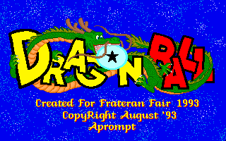

Dragonball (Z) - PC Games

Dragonball is a PC knock-off of the fighting games for the Super Famicom. You can control
either Son Goku or Kuririn. The game control is very rough; the graphics and music are
adequate. This is good for trading purposes, but the controls make it barely playable.
![[Dragonball RPG]](images/db_rpg.jpg) Dragonball RPG is a
Chinese-made game that is definitely an unofficial game. The graphics are very poor, but the music is tolerable.
Dragonball RPG is a
Chinese-made game that is definitely an unofficial game. The graphics are very poor, but the music is tolerable.
Anime Video Game Resource Center © 1998 by Luis A. Cruz